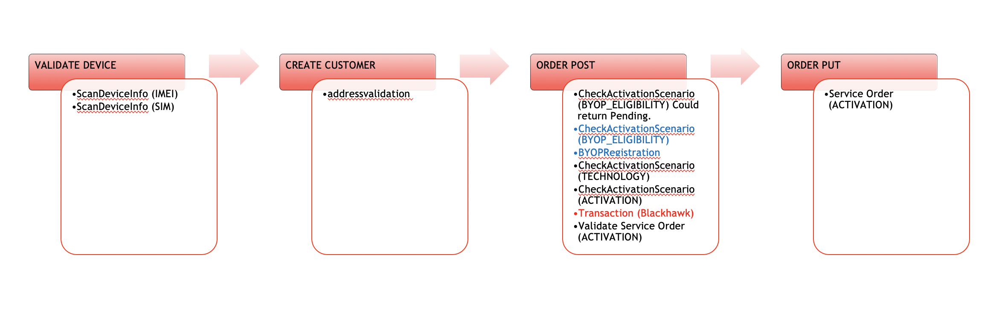
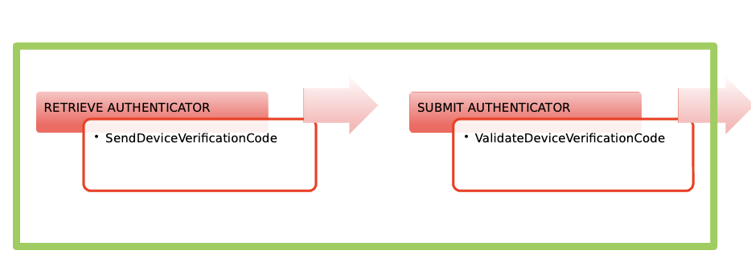
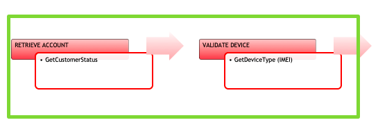
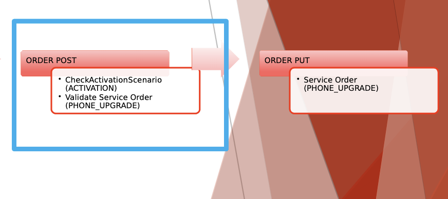

Demo
TEAM MEMBERS
- PO - GUILLERMO PITBLADDO
- TDM - JONATHAN ORTIZ
- DEV - DANNY NARANJO
- DEV - SANTIAGO RODRIGUEZ
- DEV - ENRIQUE DELGADO
- DEV - FERNANDO J GARCIA
- DEV - JOSE RIVERA
20.? – ?% (?/?)
- TracFone PAM support
- Bug resolution
20.? – ?% (?/?)
- TracFone PAM support
- Bug resolution
MAIN TOPICS
TRACFONE PAM IMPLEMENTATION:
- GetDeviceType API
- GetAccountStatus API
- AddressValidation API
TRACFONE
A New supported carrier for prepaid activations.
TRACFONE IMPLEMENTATION NEW ACTIVATION CURRENT STATE:

TRACFONE IMPLEMENTATION UPGRADE CURRENT STATE:



WHAT WE DID
- Changes in Canonical Workflows
- Carrier Testing
- BDD Creation
CHALLENGES FOR TRACFONE IMPLEMENTATION
- GetAccountStatus models were modified due to differences between documentation and carrier testing.
Let's go to the code
UPCOMING WORK
- TracFone PAM integration
- PROD support